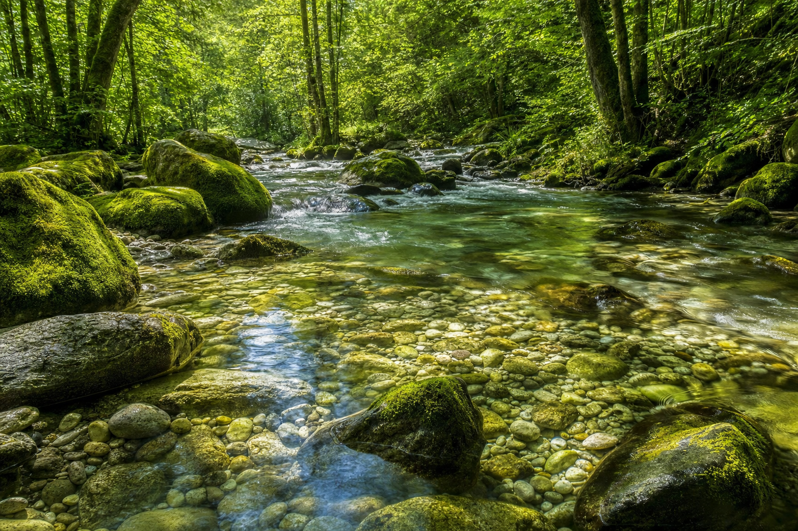

180 million wood poles in the United States. 45% past their design life. Every replacement is a choice — and for the first time in history, the right choice is also the superior one.
The United States has been building its electrical grid the same way for over a century: cut down a tree, chemically saturate it with toxins, and drive it into the ground. Multiply that by 180 million poles. Every one of them rotting. Leaching. Burning. Falling.
Every wood utility pole in America represents a tree felled from managed timber forests — or worse, old-growth stands. Nationwide, the replacement cycle for utility poles consumes millions of trees per decade. That cycle ends with Tekton.
Our carbon fiber composite poles are manufactured from industrial feedstocks — zero timber input, zero forest impact. The tree stays in the ground. The forest remains intact. The watershed stays protected.
Treated wood poles leach creosote, pentachlorophenol (PCP), and chromated copper arsenate (CCA) into surrounding soil and groundwater — chemicals classified as probable human carcinogens. When a pole fails, the contamination doesn't end. It accelerates.
Tekton poles contain zero chemical preservatives. There is nothing to leach, nothing to contain, nothing to remediate. When a Tekton pole is retired, it leaves clean ground behind.
Manufacturing emissions per 1,000 poles installed — Tekton composite vs. legacy alternatives. The numbers are not close.

When infrastructure doesn't poison the earth, the water stays clean, the soil stays uncontaminated, and the communities around the grid stay healthy. That's not an environmental marketing claim. That's physics and chemistry. Tekton poles produce zero chemical runoff because there are no chemicals in them.
Creosote-soaked wood poles are kindling in wildfire conditions. California, Texas, and the Pacific Northwest have seen entire grid sections ignite — pole to pole — as wildfires race through utility corridors. The poles themselves become fire propagation vectors.
Tekton composite poles carry a fire-rated designation. They do not ignite, do not propagate flame, and do not add fuel to the fire front. In wildfire-prone regions, switching to Tekton isn't just environmental responsibility — it's risk management at the infrastructure level.